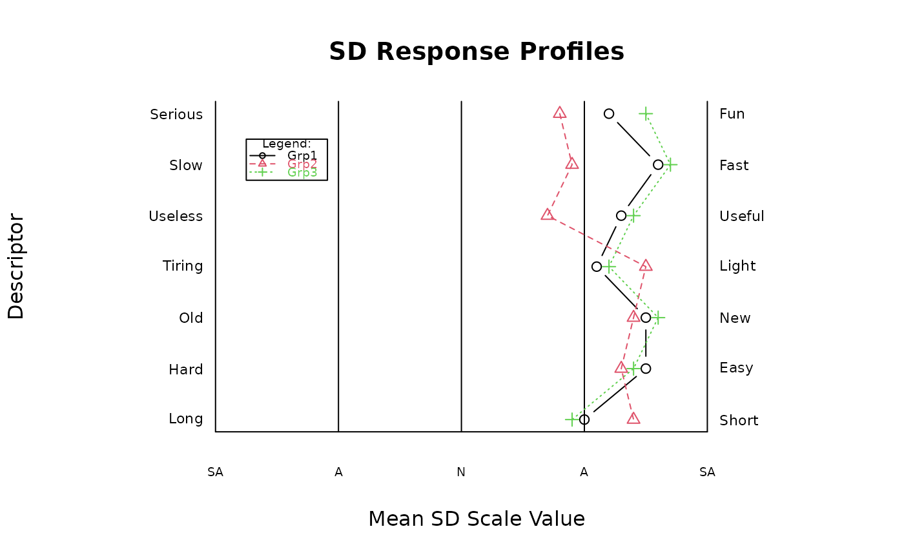

Create Semantic Differential (SD) Plots
sdRplot.RdsdRplot is an R function (in the sdRgraph R package) that can be used for creating Semantic Differential (SD) inventory plots.
Arguments
- nx
The number of levels in each of the the SD scales in the inventory, e.g., 5
- sl
The scale labels given as a list, e.g. c("SA","A","N","A","SA")
- ny
The number of descriptor items in the inventory
- x
The data matrix with the first column (col1) containing the low-end descriptors of the SD scales, the second column (col2) containing the high-end descriptors of the SD scales, and the third column and beyond (col3-onwards) containing the mean scale values for each group. The names of the columns (col 3 and above) of the data matrix (e.g., dimnames(x)[[2]][3:ncol(x)])) are used for labelling the groups in the legend.
Examples
low<-c("Serious","Slow","Useless","Tiring","Old","Hard","Long")
high<-c("Fun","Fast","Useful","Light","New","Easy","Short")
scale<-c("SA","A","N","A","SA")
grp1means<-c(4.2,4.6,4.3,4.1,4.5,4.5,4.0)
grp2means<-c(3.8,3.9,3.7,4.5,4.4,4.3,4.4)
grp3means<-c(4.5,4.7,4.4,4.2,4.6,4.4,3.9)
data<-matrix(
cbind(low,high,grp1means,grp2means,grp3means),
nrow=7,ncol=5,byrow=FALSE,
dimnames=list(c("I1","I2","I3","I4","I5","I6","I7"),
c("Low","High","Grp1","Grp2","Grp3"))
)
sdRplot(5,scale,7,data)
